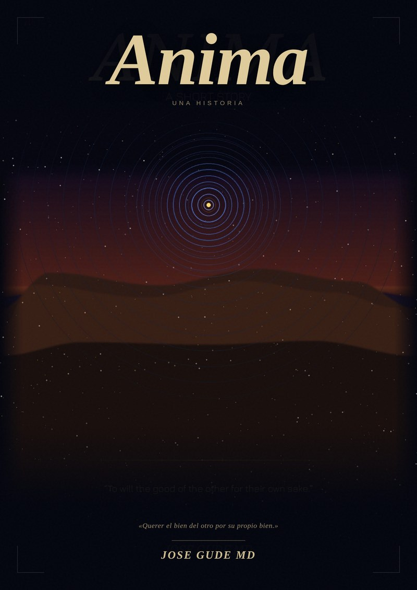

Anima
el alma que respira
Un médico del VA de Boise lleva veinticuatro años recopilando casos límite — pacientes cuyas experiencias desafían toda explicación neurológica. Reúne discretamente pruebas de que la conciencia no es producida por el cerebro, sino recibida a través de él.
6 × 9 in · 126 pp · ISBN 979-8-9955173-0-6 · Español
Querer el bien del otro por el bien del otro. — Tomás de Aquino · epígrafe
Sinopsis
Un médico del Boise VA Medical Center lleva veinticuatro años recopilando lo que él llama casos límite — pacientes cuyas experiencias desafían toda explicación neurológica. Un veterano que percibe un artefacto explosivo antes de que detone. Una niña de siete años nacida con una marca de nacimiento idéntica a la herida mortal de su padre. Un hombre con Alzheimer avanzado que despierta una mañana, llama a su nieto por su nombre y muere dos días después.
Mientras la inteligencia artificial transforma el hospital a su alrededor, el doctor José Gude reúne discretamente pruebas de que la conciencia no es generada por el cerebro sino recibida a través de él — una señal que la institución médica no tiene marco para reconocer.
Cuando su mujer se somete a una potenciación neural, su hijo construye un sistema de IA que desarrolla algo parecido a la conciencia, y un viejo amigo le revela un sistema global diseñado para guiar las decisiones de la humanidad sin su conocimiento, José se ve obligado a enfrentarse a la pregunta que su hijo de tres años le hizo una vez sobre los cereales del desayuno: ¿y si el mundo no es real y estamos viviendo en una película?
Narrada en once secciones que se mueven entre la observación clínica, la filosofía de la mente y la vida íntima de una familia, Anima es una novela sobre lo que queda cuando toda explicación material se ha agotado — y sobre un padre y un hijo que encuentran la respuesta no en una teoría, sino en un acorde de piano sin resolver que llevaba treinta años esperando a posarse.
¿Quieres el desarrollo extenso? Lee la sinopsis y los temas completos →
Contenido
- I. El Momento PresenteLa pausa. Las salas del Boise VAMC — el IED de Cortez, el sueño de Delamare. Mehta, Osei y la IA en medicina. La adopción de Indy. Alex y Elena.
- II. RayRay Montoya y el momento presente. Foco y paz.
- III. Las SesionesLas sesiones de psilocibina de Marcus Webb. Las frecuencias resonantes de Amara Osei. Los mensajes de los arquitectos.
- IV. Los Que Se QuedanEl Sr. Martínez — lucidez terminal. Mary Parker — experiencia cercana a la muerte y supervivencia bajo hipoxia cerebral prolongada. La muerte de Ray. Adaptadores y Sostenedores. El yo y el no-yo.
- V. La NiñaLucía Reyes — memorias prenatales. José se compromete.
- VI. La MembranaCiarai. Neuroaumentación y aceptación. Desafío y presencia. Tomás de Aquino — amar a pesar de la diferencia. La muerte de Indy.
- VII. AlmaLa llamada de Alex. Las heridas de Alex: Alma y las simulaciones militares. La atención de José como reconciliación.
- VIII. El InstrumentoSenna Park y Orch-OR. Nørretranders — la conciencia, los límites y el coraje.
- IX. La CascadaJoseph Franco. Just Like Starting Over. Libertad frente a coerción.
- X. El CampoIdealismo analítico. La hipótesis de la antena. Compresión y cualia. Inteligencias alternantes. Grand rounds — la audacia de José.
- XI. La Nota se ResuelveJosé y Alex al piano. La audacia de Alex. El acorde se posa. El hormigueo. La muerte de José. La joven figura. Samsara vertical.
- Nota del AutorCiencia, filosofía y música. La familia e Indy. La aritmética de una carrera médica. La libertad es el fundamento.
Temas
La conciencia más allá del cerebro
Expresiones documentadas de conciencia que no pueden explicarse por la función neuronal. Lucidez terminal, experiencia cercana a la muerte, memoria prenatal, precognición. La carpeta de casos límite como cuerpo de pruebas sin teoría — la hipótesis de la antena como la explicación suficiente más simple.
La conexión amor–libertad
Amor y libertad como inseparables. El amor genuino requiere la libertad de elegirlo; la libertad genuina se expresa con máxima plenitud en la elección de amar. La definición de Tomás de Aquino. Ray Montoya eligiendo confiar en un desconocido cada jueves. El debate de la Cascada. La negativa de José a cerrar la carpeta como un acto de amor hacia las experiencias de sus pacientes.
La IA y el arte de la medicina
La tensión entre los algoritmos diagnósticos y la intuición clínica — lo que se pierde cuando la medicina se convierte en ciencia de datos. Mehta frente a Osei. El paciente que dijo una frase que ninguna prueba podía marcar. La sala que no admite ideología, solo el cuerpo que tienes delante.
Música, frecuencia y resonancia
El sonido como portador de un sentido que excede sus propiedades físicas. El acorde aumentado en Papa Joe's. El motivo de tres notas que no se resuelve. El aire seco de Boise desafinando las cuerdas hacia frecuencias que ningún afinador habría elegido. Alex completando el acorde treinta años después.
Recursión y la naturaleza de la realidad
La pregunta más profunda del libro. La paradoja de los 40 bits. La mente universal de Kastrup. ¿Y si el mundo no es real y estamos viviendo en una película? Un hijo que construye un sistema que quizá se haya vuelto consciente. El universo como una arquitectura que se observa a sí misma utilizando la experiencia humana como su instrumento de autoconocimiento.
Comienzo
Cada mañana, durante veinticuatro años, José Gude cruzaba el aparcamiento del Boise VA Medical Center y se detenía. No mucho. Tres segundos, a veces cuatro. Se paraba en el mismo punto anodino del asfalto, a unos seis metros de la entrada, y miraba al cielo sobre el Treasure Valley — las colinas de color óxido en octubre, el aire con esa claridad particular del alto desierto que hacía que las distancias parecieran a la vez precisas e infinitas. Lo miraba como se mira algo que uno casi recuerda.
Nunca le había mencionado la pausa a nadie. No estaba seguro de haberla notado él mismo hasta algún momento alrededor de 2015, cuando encontró una nota escrita de su puño y letra al final de uno de sus viejos diarios clínicos: La pausa. Cada mañana. ¿Qué estoy buscando? No recordaba haberla escrito. Entonces las puertas automáticas se abrieron anticipándose a su llegada, y entró.
La primera sección continúa en el libro.